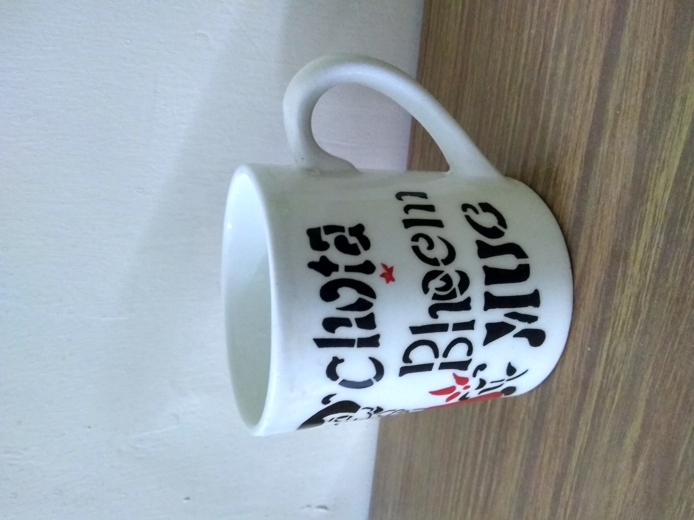
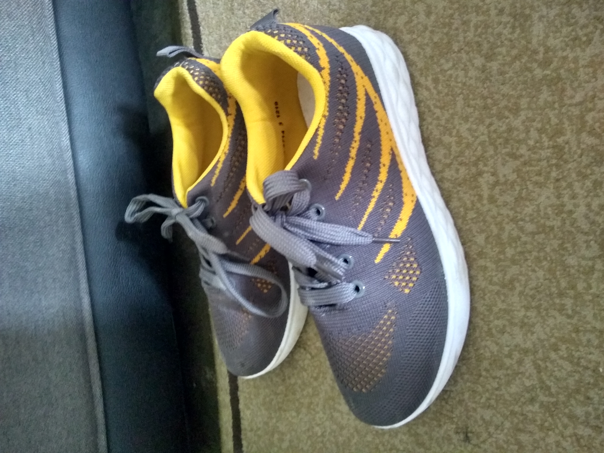
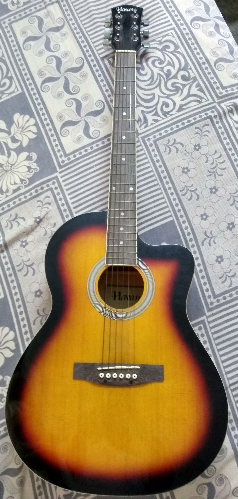

Mobilenet Model Output : coffee mug
Microsoft Azur Output : a coffee mug on a table
Result : Microsoft Azur is more accurate than Mobilenet.

Mobilenet Model Output : running shoe
Microsoft Azur Output : a pair of shoes
Result : Microsoft Azur is more accurate than Mobilenet.

Mobilenet Model Output : acoustic guitar
Microsoft Azur Output : a close up of a guitar
Result : Mobilenet is more accurate than Microsoft Azur.

Mobilenet Model Output : teddy bear
Microsoft Azur Output : a teddy bear sitting on a table
Result : Microsoft Azur is more accurate than Mobilenet.